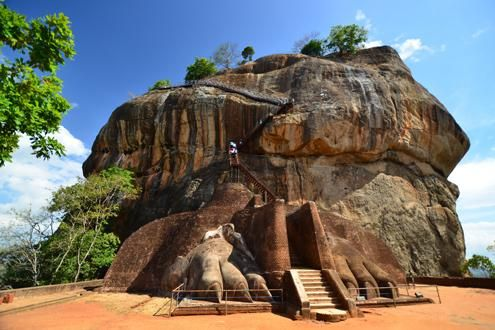
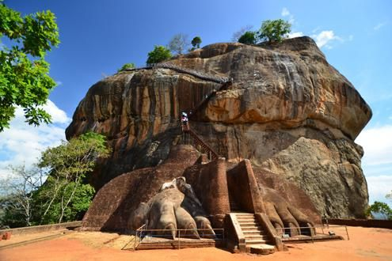

North Central Province (Sinhala: උතුරු මැද පළාත Uturumæda Paḷāta, Tamil: வட மத்திய மாகாணம் Wada Maththiya Mākāṇam) is one of the nine provinces of Sri Lanka, the first level administrative division of the country. The provinces have existed since the 19th century but did not have any legal status until 1987 when the 13th Amendment to the Constitution of Sri Lanka established provincial councils.The province is the largest by size, and second least populated in the country.The province consists of the districts of Anuradhapura and Polonnaruwa, both of which were important ancient Sri Lankan kingdoms. The climate is semi-arid, and the forests are dry evergreen forests.
Minneriya National Park (Sinhala: මින්නේරිය ජාතික වනෝද්යානය, romanized: Minnēriya Jātika Vanōdyānaya; Tamil: மின்னேரியா தேசிய வனம், romanized: Miṉṉēriyā Tēciya Vaṉam) is a national park in North Central Province of Sri Lanka. The area was designated as a national park on 12 August 1997, having been originally declared as a wildlife sanctuary in 1938.The reason for declaring the area as protected is to protect the catchment of Minneriya tank and the wildlife of the surrounding area. The tank is of historical importance, having been built by King Mahasen in third century AD. The park is a dry season feeding ground for the elephant population dwelling in forests of Matale, Polonnaruwa, and Trincomalee districts. The park earned revenue of Rs. 10.7 million in the six months ending in August 2009.Along with Kaudulla and Girithale, Minneriya forms one of the 70 Important Bird Areas (IBAs) of Sri Lanka.The park is situated 182 kilometres (113 mi) from Colombo.
 


Sigiriya or Sinhagiri (Lion Rock Sinhala: සීගිරිය, Tamil: சிகிரியா/சிங்ககிரி, pronounced see-gi-ri-yə) is an ancient rock fortress located in the northern Matale District near the town of Dambulla in the Central Province, Sri Lanka. It is a site of historical and archaeological significance that is dominated by a massive column of rock approximately 180 metres (590 ft) high.According to the ancient Sri Lankan chronicle the Cūḷavaṃsa, this area was a large forest, then after storms and landslides it became a hill and was selected by King Kashyapa (477 – 495 AD) for his new capital. He built his palace on top of this rock and decorated its sides with colourful frescoes. On a small plateau about halfway up the side of this rock he built a gateway in the form of an enormous lion. The name of this place is derived from this structure; Sīnhāgiri, the Lion Rock (an etymology similar to Sinhapura, the Sanskrit name of Singapore, the Lion City).The capital and the royal palace were abandoned after the king's death. It was used as a Buddhist monastery until the 14th century.Sigiriya today is a UNESCO listed World Heritage Site. It is one of the best preserved examples of ancient urban planning
Kaudulla National Park is a national park on the island of Sri Lanka located 197 kilometres (122 mi) away from the largest city, Colombo. It was designated a national park on April 1, 2002 becoming the 15th such area on the island. In the 2004–2005 season more than 10,000 people visited the National Park, generating an income of Rs.100,000 from entrance fees.Along with Minneriya and Girithale BirdLife International have identified Kaudulla as an Important Bird Area.Historically Kaudulla was one of the 16 irrigation tanks built by King Mahasen.Following a period of abandonment it was reconstructed in 1959. It now attracts and supports a variety of plant and animal life, including large mammals, fish and reptiles.
The Ruwanweli Maha Seya, also known as the Mahathupa (the Great Thupa) is a stupa (a hemispherical structure containing relics) in Anuradhapura, Sri Lanka. Two quarts or one Dona of the Buddha's relics are enshrined in the stupa, making it the largest collection of his relics anywhere. It was built by Sinhalese King Dutugemunu in c. 140 B.C., who became king of Sri Lanka after a war in which the Chola King Elāra (Ellalan) was defeated. It is also known as Swarnamali Seya, Svaṇṇamāli Mahaceti (in Pali) and Rathnamali Seya.This is one of the "Solosmasthana" (the 16 places of veneration) and the "Atamasthana" (the 8 places of veneration). The stupa is one of the world's tallest ancient monuments, standing at 103 m (338 ft) and with a circumference of 290 m (951 ft). The original stupa had been about 55 m (180 ft) in height and was renovated by many kings. The Kaunghmudaw Pagoda in Sagaing, Myanmar is modelled after this stupa The Mahavamsa contains a detailed account on the construction and the opening ceremony of the stupa.The stupa was covered by jungle as of the 19th century. After fund raising efforts by a bhikkhu, it was renovated in the early 20th century. The Ruwanweli Seya Restoration Society was set up, most notably the philanthropist Hendrick Appuhamy, donated Rs 20 million (1912 ) adjusted for inflation in 2021 it is worth 611 million US Dollars for the restoration works, the foundation was founded in 1902 and the final crowning of the stupa took place on 17 June 1940.


Jaya Sri Maha Bodhi (Sinhala: ජය ශ්රී මහා බොධිය) is a sacred bo tree in the Mahamewna Gardens, Anuradhapura, Sri Lanka. It is the southern branch from the historical Sri Maha Bodhi at Buddha Gaya in India under which Buddha attained Enlightenment. It was planted in 288 BC, and is the oldest living human-planted tree in the world with a known planting date.The other fig trees that surround the sacred tree protect it from storms and animals such as monkeys, bats, etc.In April 2014, the government banned all construction within 500 metres (1,600 ft) of the tree. Only construction that obviously will not harm the tree will be allowed.